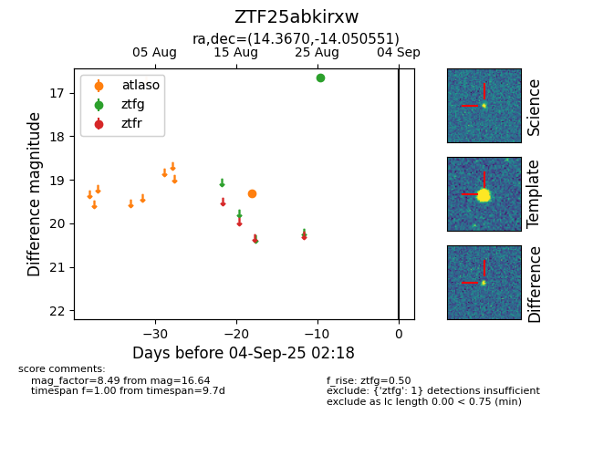

FINK: ZTF25abkirxw
Lasair: ZTF25abkirxw
ALeRCE: ZTF25abkirxw
ZTF25abkirxw (ztf,fink)
equatorial (ra, dec) = (14.3670,-14.05055)
galactic (l, b) = (129.3712,-76.84685)

last atlaso=19.30, ztfg=16.64
1 atlaso, 1 ztfg detections